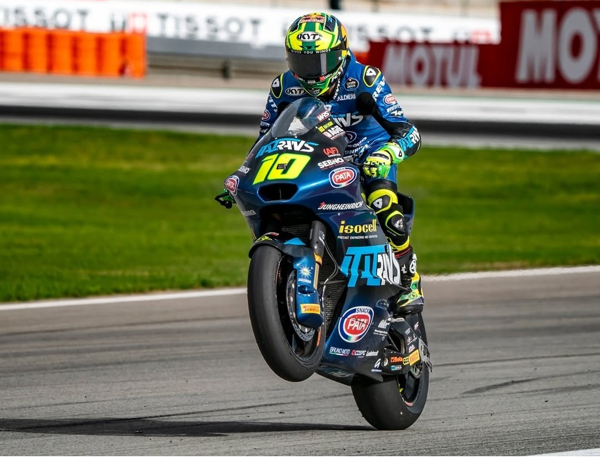
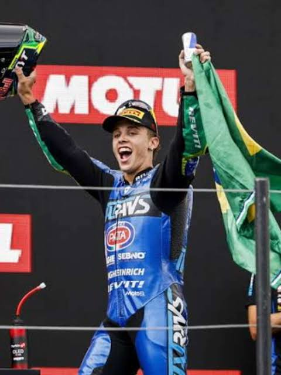
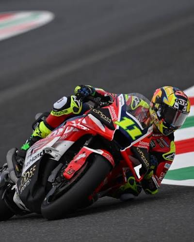
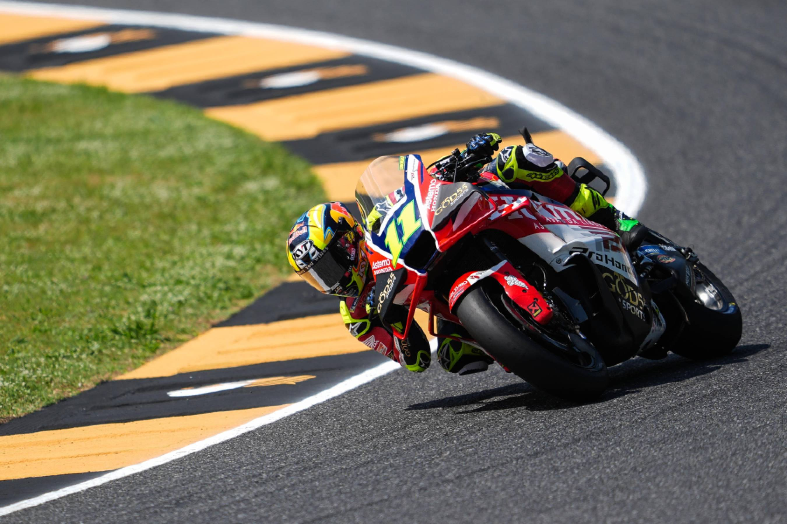

Diogo Moreira é um dos maiores talentos do Brasil no mundo da motovelocidade moderna. Com velocidade, técnica e determinação, representa o Brasil nas princiapais competições internacionais, conquistando títulos e fãs ao redor do mundo. Seu estilo agressivo e sua habilidade em ultrapassagens emocionantes fazem dele um piloto emocionante de se assistir. Além de seu sucesso nas pistas, Diogo também é conhecido por seu carisma e dedicação aos fãs, tornando-se uma inspiração para jovens pilotos e entusiastas do esporte.
Galeria de Fotos



